kQSO — první kroky
Dva celé příklady od založení logu po odeslání: VKV závod a SOTA aktivace. Podrobnosti ke každému kroku jsou v návodu.
1. VKV závod
Krok 1: založ log
V seznamu logů klepni na + Nový log a vyber profil VKV závod. Vyplň svou volačku a lokátor (6 znaků; tlačítko se zaměřovačem ho vezme z polohy). Závod IARU R1 platí pro všechny závody ČRK včetně Polního dne; účast celý závod nebo 6 hodin. Vyber pásmo a mód, na kterých budeš závod začínat (další pásma přepneš během závodu v deníku, viz krok 4), a klepni na Založit.
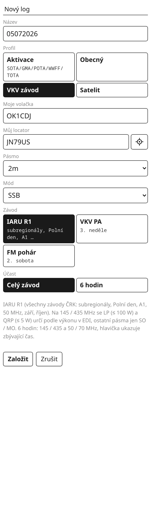
Lokátor v hlavičce logu už nejde změnit a počítají se od něj body. Zkontroluj ho hned.
Krok 2: první spojení
V hlavičce je pásmo, mód a v rámečku číslo, které dáváš protistanici. Napiš, co slyšíš: značku, report s číslem a lokátor, a stiskni Enter. Pak prázdný Enter spojení zapíše a číslo v rámečku se zvýší.

OK2KZR 59123 JN99AF ⏎ ⏎: report 59, číslo 123, lokátor; hned je vidět QRB.Report psát nemusíš: OK2KZR 123 JN99AF je totéž (59 se doplní samo). A spojení nemusí být na jednom řádku: každou část můžeš poslat Enterem zvlášť, jak ji protistanice odvysílá (Po částech). Zapíše se, až má značku, číslo i lokátor.
Krok 3: nech si napovídat
Od dvou znaků nabízí lišta značky z databáze stanic, které jezdí VKV závody. Klepnutí značku doplní a když databáze zná lokátor, nabídne ho jako + lokátor. Stanice, které už v logu na tomhle pásmu máš, jsou inverzně; napsaná duplicita zčerná celý řádek.
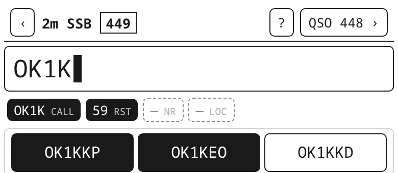
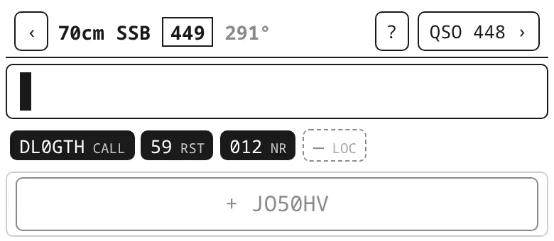
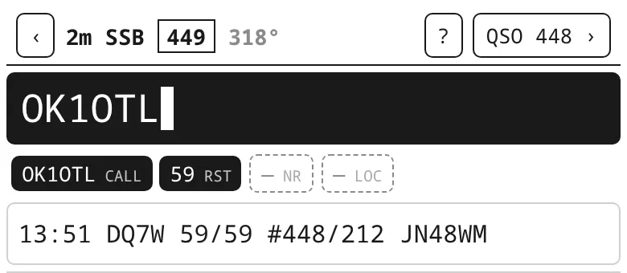
Krok 4: přejdi na 70 cm
Pásmo se přepíná psaním: 70cm ⏎. Číslování běží dál, je společné pro všechna pásma. Štítek QRV u značky ukazuje, na kterých dalších pásmech stanice bývá; přeškrtnutá jsou ta, kde už spojení máš. Stanici, kterou máš z 2 m, kQSO na 70 cm rovnou doplní lokátor z logu.
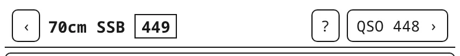
70cm ⏎.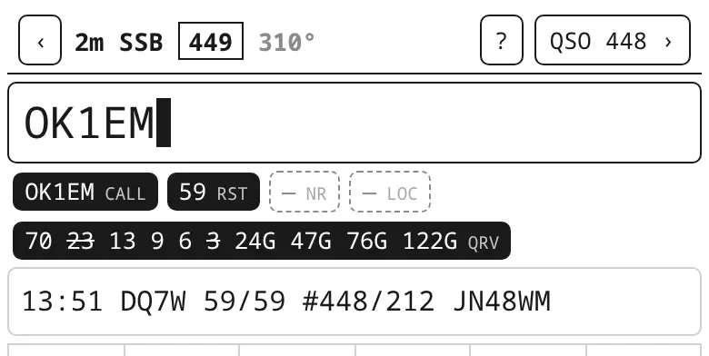
Zpátky na 2 m: 2m ⏎. Víc v návodu: Přepnutí pásma a módu.
Krok 5: během závodu
QSO n › v hlavičce otevře seznam spojení s body a skóre pásma. Klepnutím na spojení ho opravíš; poslední spojení upravíš i příkazem E ⏎, smažeš D ⏎. Ze seznamu se dostaneš na Statistiku (spojení a body po hodinách, velké čtverce, nejdelší spojení) a na Mapu.
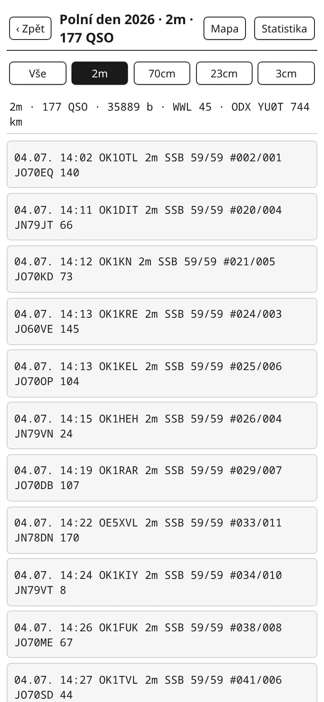
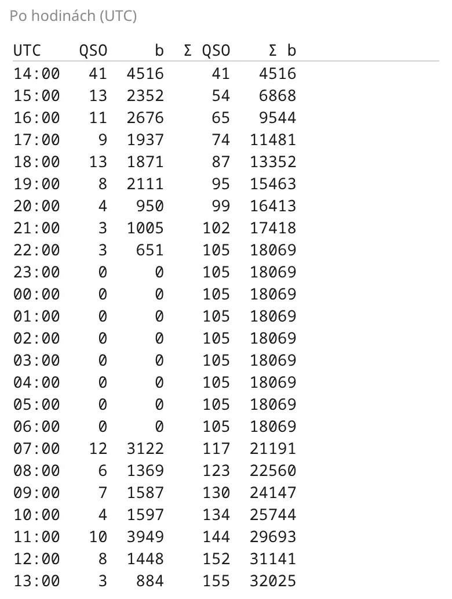
Na tabletu nebo počítači na šířku s klávesnicí ukáže kQSO vpravo závodní panel s velkým číslem, rate a body.
Krok 6: po závodě pošli EDI
V seznamu logů klepni u závodu na EDI. Nahoře vyber kategorii (SO, MO, CHECK), u každého pásma vyplň výkon, anténu a vybavení (kQSO si je zapamatuje na příště) a ulož soubory, jeden na pásmo (01OK1XXX.edi). Ty pak pošli vyhodnocovateli podle propozic závodu.
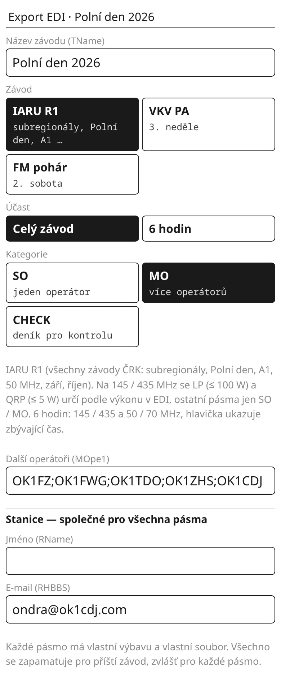
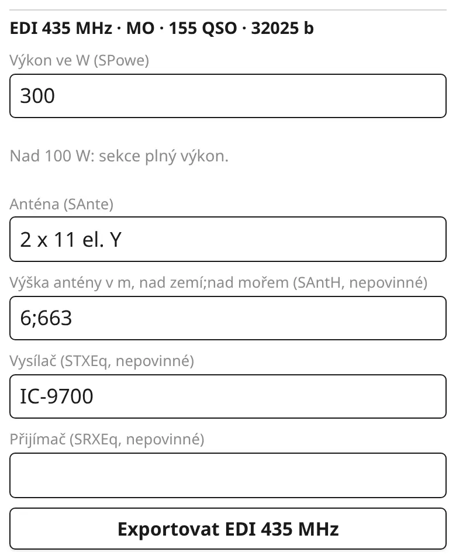
Do svého deníku dostaneš spojení tlačítkem export (ADIF se všemi pásmy) nebo Wavelog.
2. SOTA aktivace
Krok 1: na vrcholu založ log
+ Nový log, profil Aktivace, volačka (klidně s /P). Klepni na tlačítko se zaměřovačem: vyplní lokátor z polohy a pod Moje reference nabídne nejbližší vrcholy SOTA, GMA, parky POTA a WWFF a rozhledny TOTA do 25 km. Klepnutím je přidáš, klidně víc naráz (vrchol + park). Funguje to i bez signálu, když máš oblast stažená (Nastavení → Reference offline; okolí domova se stáhne samo).
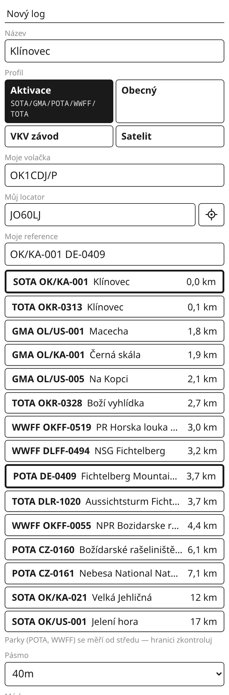
Krok 2: spojení
Napiš značku a přijatý report: DL1ABC 579 ⏎, prázdný ⏎ zapíše. Odeslaný report je 59 / 599; jiný napiš s T (DL1ABC 579 T559). Když stanice nedá report, stačí samotná značka.
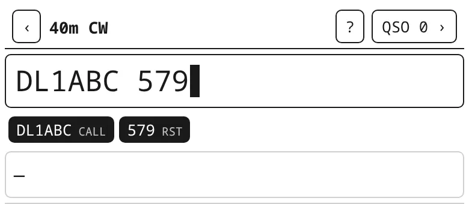
DL1ABC 579: 40 m CW.Pásmo a mód přepneš psaním: 20m ssb ⏎. Platí pro další spojení, dokud je nezměníš.
Krok 3: vrchol–vrchol (S2S)
Když volá stanice z jiného vrcholu nebo parku, připiš její referenci za značku. Píše se s lomítkem, poslední lomítko se změní na pomlčku: OK1ABC/P 57 OK/ZC/001 ⏎ ⏎. Pod řádkem je pak poslední zapsané spojení i s referencí.

Na platnou SOTA aktivaci potřebuješ aspoň 4 spojení; počet vidíš v hlavičce (QSO n).
Krok 4: doma log exportuj a nahraj
V seznamu logů klepni na export. Má-li aktivace víc vlastních referencí, objeví se řádek s celým ADIF a souborem pro každou referenci zvlášť, pojmenovaným tak, jak ho který program chce (třeba OK1CDJ-P@DE-0409-20260815.adi). Každý soubor nahraj do jeho programu: SOTA na sotadata.org.uk, POTA na pota.app.
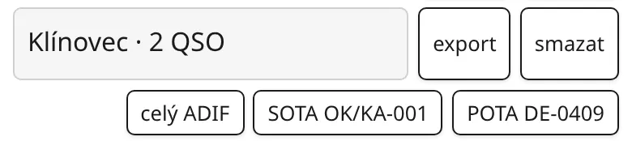
Aktivace se do Wavelogu neposílají. S jednou referencí uloží export rovnou jeden ADIF.
Další: hardwarová klávesnice, rádio a CW klíčovač, satelity. Celý návod.